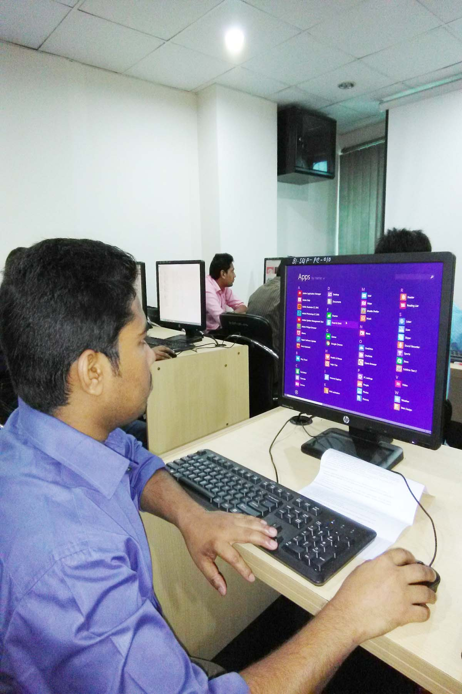

| Home | About | Portfolio | Gallery | Contact |
AutobiographyWhen someone asks me about my biography then I say I was born in Companigonj, Noakhali, Bangladesh in 1994. I’m a student. My father is a farmer and mother is a housewife. I’m 1st son of my parents. I have two younger brothers and one younger sister. They are students. Since childhood I have been wanted to learn more about new topic. I want to do something new that will be thinkable innovative and energetic to others. I begin ABCD learning from my mother. I start going to school at 6 years old. I completed primary education from Shantir Hat Govt. Primary School. After completing primary level I’m admitted in high school. In 2010, I have successfully completed secondary education with achievement of GPA-5 from Abu Major Hat A. Sayedia Dakhil Madrasah. Then I was continued college level education. In 2012, I have successfully completed HSC with achievement of GPA-5 from Hazari Hat Senior Alim Madrasah. I have completed higher secondary level in my home district. After that I have taken admission in Govt. Titumir College, Dhaka. Now I’m a student of BBS (Bachelor of Social Science) department. Currently I want to learn WEB DESIGN, that's why I’m enrolling 03 months duration web design course in BITM under SEIP Project of Bangladesh Government. I don’t get better financial opportunities from my family because of poverty, but I always get more motivational speech from my mother. I love so much my parents & family. |
 |